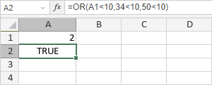

OR funkcija
OR funkcija je jedna od logičkih funkcija. Koristi se da proveri da li je logička vrednost koju unesete TRUE ili FALSE. Funkcija vraća FALSE ako su svi argumenti FALSE.
Sintaksa
OR(logical1, [logical2], ...)
OR funkcija ima sledeće argumente:
| Argument | Opis |
|---|---|
| logical1/2/n | Uslov koji želite da proverite da li je TRUE ili FALSE. |
Napomene
Možete uneti do 255 logičkih vrednosti.
Kako primeniti OR funkciju.
Funkcija vraća TRUE ako je bar jedan od argumenata TRUE.
Primeri
Postoje tri argumenta: logical1 = A1<10, logical2 = 34<10, logical3 = 50<10, gde je A1 jednako 12. Sve ove logičke izraze su FALSE. Funkcija vraća FALSE.
Ako promenimo vrednost A1 sa 12 na 2, funkcija vraća TRUE:
